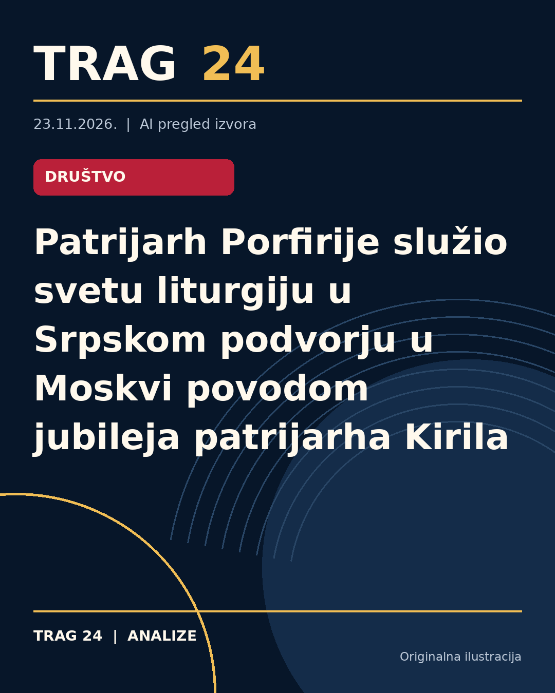

Patrijarh Porfirije služio svetu liturgiju u Srpskom podvorju u Moskvi povodom jubileja patrijarha Kirila

ŠTA SE DOGODILO
Patrijarh srpski Porfirije služio je svetu liturgiju u hramu Svetih apostola Petra i Pavla u Moskvi, u Srpskom pravoslavnom podvorju. Liturgija je održana na praznik Svetog Nektarija Eginskog Čudotvorca, a nakon bogosluženja patrijarh je uručio crkvena odlikovanja zaslužnim pojedincima koji su doprineli uređenju hrama i podvorja.
HRONOLOGIJA
Liturgija je služena danas, na praznik Svetog Nektarija. Započeto je čitanjem odeljka iz Jevanđelja, nakon čega je patrijarh Porfirije održao propoved. Nakon liturgije usledilo je uručenje Ordena Svetog i blagovernog kneza Lazara ruskog privrednika Juriju Jevdokimovu i predsedniku Crkvenog odbora Petropavlovskog hrama Aleksandru Manajevu. Patrijarh se u Moskvi nalazi u višednevnoj poseti povodom molitvenih svečanosti u čast 80. rođendana patrijarha moskovskog i sve Rusije Kirila.
ŠTA NAVODE IZVORI
Svi izvori ističu da je liturgija održana u Srpskom podvorju u Moskvi i da su pored patrijarha Porfirija prisustvovali brojni vernici iz Srbije i Rusije, uključujući i studente iz Srbije koji studiraju u Moskvi. Navodi se i da je patrijarh održao propoved u kojoj je govorio o istoriji, sadašnjosti, Bibliji, pravu i spasenju kroz istinu. Odlikovanja su dodeljena na predlog episkopa remezijanskog Stefana, a među sveštenim licima koja su sasluživala bili su mitropoliti i episkopi SPC te brojni članovi bratstva hrama. Takođe, istaknuto je da je liturgiji prisustvovao hor Svetodanilovog manastira.
ŠTA JE POTVRĐENO
Potvrđeno je da je patrijarh Porfirije služio svetu liturgiju u Srpskom podvorju u Moskvi, da je tom prilikom održao propoved, kao i da su dodeljena crkvena odlikovanja pojedincima koji su značajno doprineli srpskom hramu. Takođe, potvrđeno je da je liturgiji prisustvovalo više sveštenih lica, vernici raznih nacionalnosti i studenti iz Srbije boravioci Moskve. Poseta se odvija u okviru molitvenih svečanosti povodom jubileja patrijarha Kirila.
ŠTA NIJE POTVRĐENO
Nema podataka o tačnoj dužini posete patrijarha Porfirija Moskvi niti detaljima molitvenih svečanosti. Nisu dostupne ni izjave samog patrijarha ili učesnika o detaljnim temama propovedi ili ličnim utiscima sa službe. Detalji o daljim aktivnostima tokom boravka u Moskvi nisu navedeni.
ŠTA OSTАJE OTVORENO: Ostaje otvoreno da li će patrijarh Porfirije učestvovati u dodatnim događajima ili susretima u Moskvi, kao i da li će se nakon posete održati zvanične izjave o rezultatima ili efekatima ove posete na odnose Srpske i Ruske pravoslavne crkve. Takođe, ostaje nepoznato kako su studenti iz Srbije doživeli susret sa patrijarhom i kakve teme su konkretno razmatrane.
Izvori
- https://www.blic.rs/vesti/drustvo/patrijarh-porfirije-sluzio-svetu-liturgiju-u-srpskom-podvorju-u-moskvi/q1rgcvj
- https://n1info.rs/vesti/patrijarh-porfirije-sluzio-liturgiju-u-moskvi/
- https://www.telegraf.rs/vesti/srbija/4437770-patrijarh-porfirije-sluzio-svetu-liturgiju-u-srpskom-podvorju-u-moskvi
Ova analiza je pripremljena uz pomoć veštačke inteligencije na osnovu javno dostupnih izvora. Navodi izvora nisu nužno nezavisno potvrđeni.